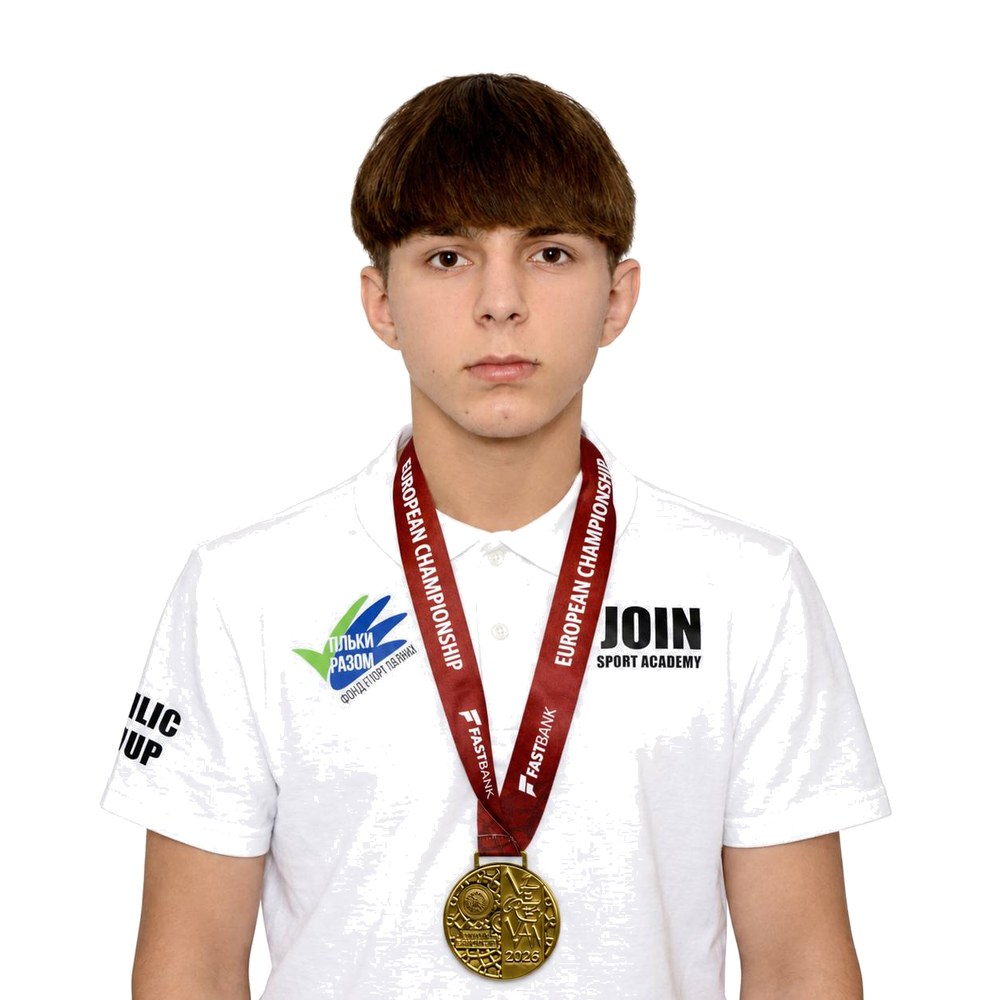
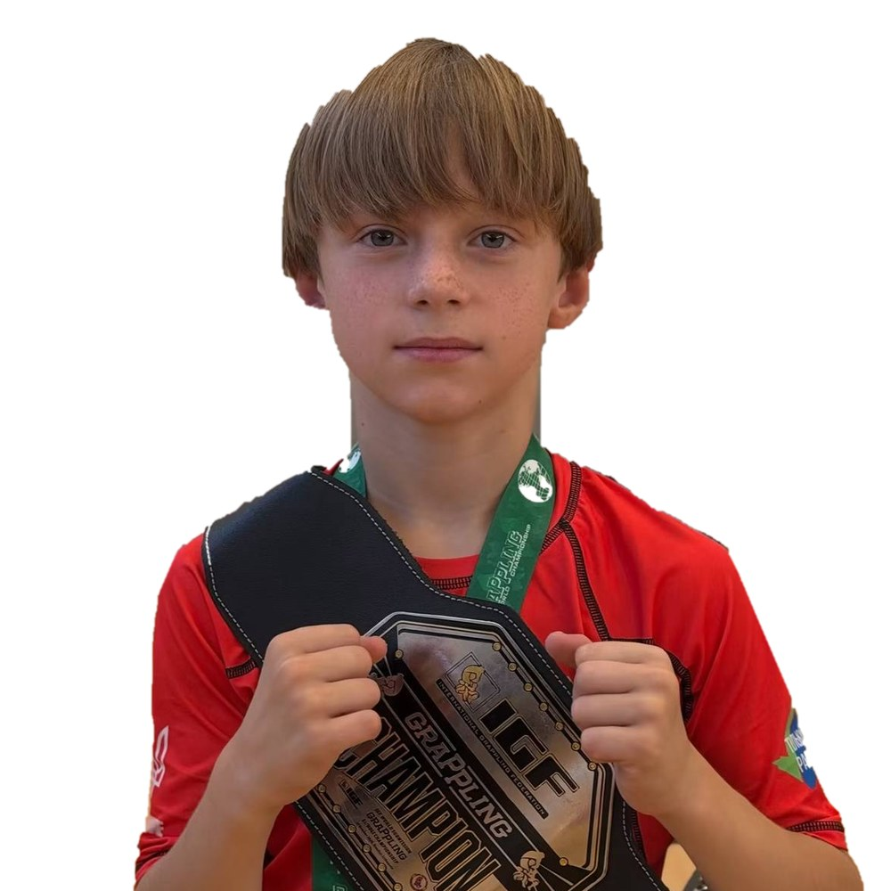
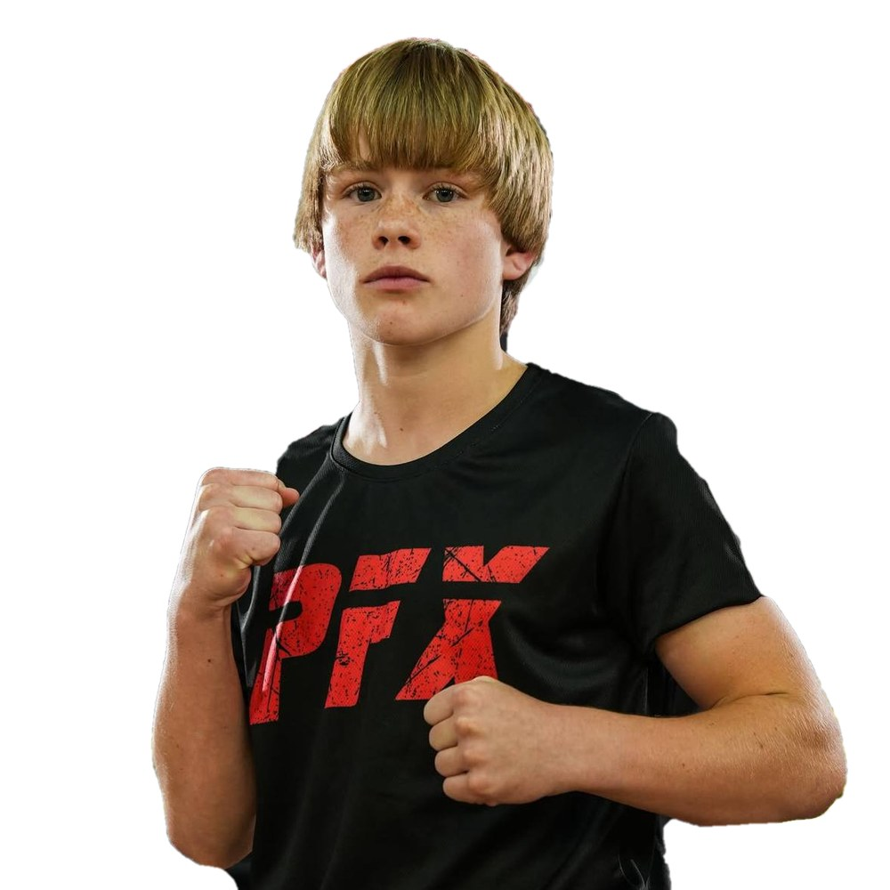
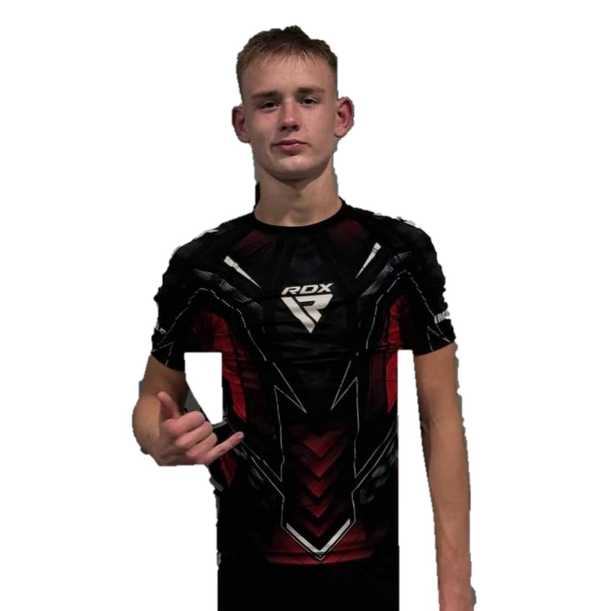

Давид Зінчук
- Чемпіон Європи з панкратіону
- Дворазовий чемпіон України з ММА
Наші чемпіони
Спортсмени «Воїна», які приносять медалі Луцьку та Україні. Кожна перемога — результат дисципліни, характеру й щоденної праці.




Обери свою групу, напиши або зателефонуй тренеру — і ми чекаємо тебе в залі на Карбишева, 1.